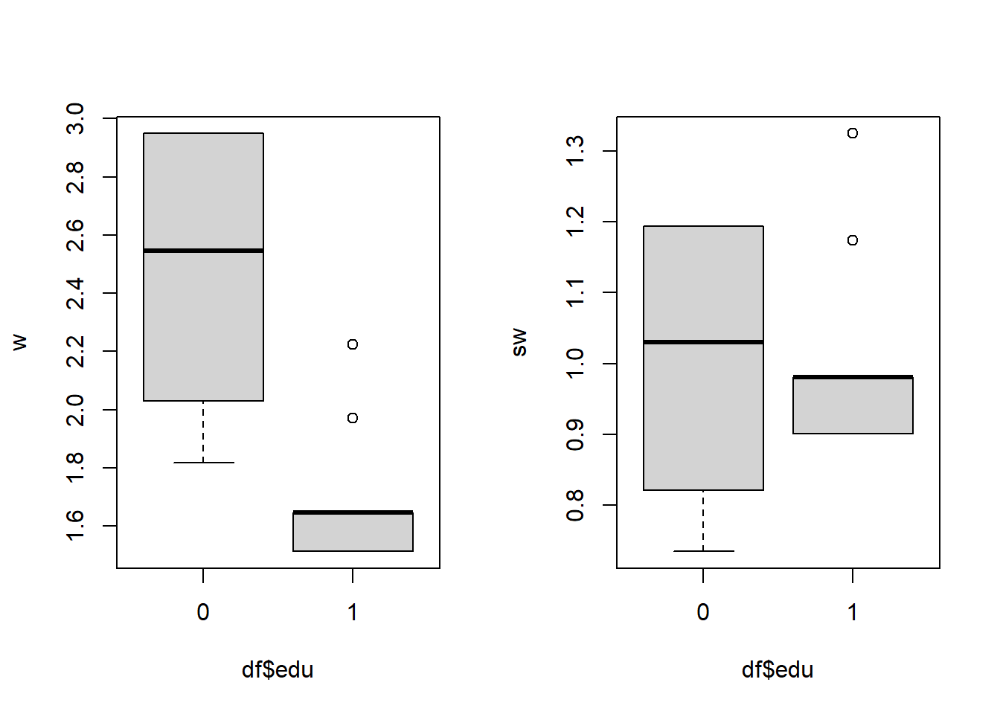

Chapter 2 Reminders - Estimate the ATE
2.1 Estimation of the Average Total Effect (ATE) by g-computation
G-computation can be used for the estimation of the total effect and two-way decomposition (CDE, randomized direct and indirect effects). Analogs of the 3-way and 4-way decompositions are also given by the CMAverse package.
The following steps describe the implementation of the g-computation estimator of the average total effect \(\text{ATE} = \mathbb{E}(Y_{A=1}) - \mathbb{E}(Y_{A=0})\).
The g-formula for the ATE is : \[\small \Psi^{\text{ATE}} =\sum_{l(0) \in L(0)} \mathbb{E}\left(Y \mid A=1, L(0)=l(0)\right)P(L(0) = l(0)) - \sum_{l(0) \in L(0)} \mathbb{E}\left(Y \mid A=0, L(0)=l(0)\right)P(L(0) = l(0))\] \[\small \Psi^{\text{ATE}} =\sum_{l(0) \in L(0)} \overline{Q}(A=0) \times P(L(0) = l(0)) - \sum_{l(0) \in L(0)} \overline{Q}(A=1) \times P(L(0) = l(0))\]
Fit a logistic or a linear regression to estimate \(\overline{Q} = \mathbb{E}(Y \mid A, L(0))\)
Use this estimate to predict an outcome for each subject \(\hat{\overline{Q}}(A=0)_i\) and \(\hat{\overline{Q}}(A=1)_i\), by evaluating the regression fit \(\overline{Q}\) at \(A=0\) and \(A=1\) respectively
Plug the predicted outcomes in the g-formula and use the sample mean to estimate \(\Psi_{ATE}\).
We can estimate its components and plug them directly in the g-formula: \[\begin{equation} \hat{\Psi}^{\text{ATE}}_{\text{gcomp}} = \frac{1}{n} \sum_{i=1}^n \left[ \hat{\overline{Q}}(A=1)_i - \hat{\overline{Q}}(A=0)_i \right] \end{equation}\]
For continuous outcomes, \(\overline{Q}(A=a)\) functions can be estimated using linear regressions. For binary outcomes, they can be estimated using logistic regressions.
## 0. Import data
rm(list = ls())
df <- read.csv2("data/df.csv")
## 1. Estimate Qbar
Q_tot_death <- glm(death ~ edu + sex + low_par_edu,
family = "binomial", data = df)
Q_tot_score <- glm(score ~ edu + sex + low_par_edu,
family = "gaussian", data = df)
## 2. Predict an outcome for each subject, setting A=0 and A=1
# prepare data sets used to predict the outcome under the counterfactual
# scenarios setting A=0 and A=1
data_Ais1 <- data_Ais0 <- df
data_Ais1$edu <- 1
data_Ais0$edu <- 0
# predict values
Y1_death_pred <- predict(Q_tot_death, newdata = data_Ais1, type = "response")
Y0_death_pred <- predict(Q_tot_death, newdata = data_Ais0, type = "response")
Y1_score_pred <- predict(Q_tot_score, newdata = data_Ais1, type = "response")
Y0_score_pred <- predict(Q_tot_score, newdata = data_Ais0, type = "response")
## 3. Plug the predicted outcome in the gformula and use the sample mean
## to estimate the ATE
ATE_death_gcomp <- mean(Y1_death_pred) - mean(Y0_death_pred)
ATE_death_gcomp## [1] 0.1867172## [1] -19.75274A 95% confidence interval can be estimated applying a bootstrap procedure. An example is given in the following code.
## set seed for reproducibility
set.seed(1234)
B <- 10 # use a large number here (at least 200 to 1000)
## we will store estimates from each bootstrap sample in a data.frame:
bootstrap_estimates <- data.frame(matrix(NA, nrow = B, ncol = 2))
colnames(bootstrap_estimates) <- c("boot_death_est", "boot_score_est")
for (b in 1:B){
# sample the indices 1 to n with replacement
bootIndices <- sample(1:nrow(df), replace=T)
bootData <- df[bootIndices,]
if (round(b/100, 0) == b/100 ) print(paste0("bootstrap number ",b))
Q_tot_death <- glm(death ~ edu + sex + low_par_edu,
family = "binomial", data = bootData)
Q_tot_score <- glm(score ~ edu + sex + low_par_edu,
family = "gaussian", data = bootData)
boot_Ais1 <- boot_Ais0 <- bootData
boot_Ais1$edu <- 1
boot_Ais0$edu <- 0
Y1_death_boot <- predict(Q_tot_death, newdata = boot_Ais1, type = "response")
Y0_death_boot <- predict(Q_tot_death, newdata = boot_Ais0, type = "response")
Y1_score_boot <- predict(Q_tot_score, newdata = boot_Ais1, type = "response")
Y0_score_boot <- predict(Q_tot_score, newdata = boot_Ais0, type = "response")
bootstrap_estimates[b,"boot_death_est"] <- mean(Y1_death_boot - Y0_death_boot)
bootstrap_estimates[b,"boot_score_est"] <- mean(Y1_score_boot - Y0_score_boot)
}
IC95_ATE_death <- c(ATE_death_gcomp -
qnorm(0.975) * sd(bootstrap_estimates[,"boot_death_est"]),
ATE_death_gcomp +
qnorm(0.975) * sd(bootstrap_estimates[,"boot_death_est"]))
IC95_ATE_death## [1] 0.1694074 0.2040270IC95_ATE_score <- c(ATE_score_gcomp -
qnorm(0.975) * sd(bootstrap_estimates[,"boot_score_est"]),
ATE_score_gcomp +
qnorm(0.975) * sd(bootstrap_estimates[,"boot_score_est"]))
IC95_ATE_score## [1] -20.14219 -19.363302.2 Estimation of the ATE by IPTW
2.2.1 “Classic” Horvitz Thompson estimator
If the average total effect (ATE) is identifiable, \(\Psi_{ATE} = \mathbb{E}(Y_{A=1}) - \mathbb{E}(Y_{A=0})\) can be expressed using Inverse probability of treatment weighting (IPTW), denoting \(\mathbb{P}(A=a \mid L(0)) = g(A=a \mid L(0))\): \[\begin{equation} \Psi_{ATE} = \mathbb{E}\left( \frac{\mathbb{I}(A=1)}{g(A=1 \mid L(0))} Y \right) - \mathbb{E}\left( \frac{\mathbb{I}(A=0)}{g(A=0 \mid L(0))} Y \right) \end{equation}\]
The following steps describe the implementation of the IPTW estimator
Estimate the treatment mechanism \(g(A=1 \mid L(0))\)
Predict each individual’s probability of being exposed to her own exposure
Apply weights corresponding to the inverse of the predicted probability \(w_i = \frac{1}{\hat{g}(A = a_i \mid L(0)_i)}\)
Use the empirical mean of the weighted outcome \(Y\): \(\hat{\mathbb{E}}(Y_a) = \frac{1}{n} \sum_{i=1}^n \frac{\mathbb{I}(A_i=a)}{\hat{g}(A=a_i \mid L(0)_i)} Y_i\)
rm(list = ls())
df <- read.csv2("data/df.csv")
## 1. Estimate g
g_L <- glm(edu ~ sex + low_par_edu,
family = "binomial", data = df)
## 2. Predict each individual's probability of being exposed to her own exposure
# predict the probabilities P(A0_PM2.5=1|L(0)) & P(A0_PM2.5=0|L(0))
pred_g1_L <- predict(g_L, type = "response")
pred_g0_L <- 1 - pred_g1_L
# the predicted probability of the observed treatment A=a_i is :
gA_L <- rep(NA, nrow(df))
gA_L[df$edu == 1] <- pred_g1_L[df$edu == 1]
gA_L[df$edu == 0] <- pred_g0_L[df$edu == 0]
## 3. Apply weights corresponding to the inverse of the predicted probability
wt <- 1 / gA_L
## 4. Use the empirical mean of the weighted outcome
# point estimates:
IPTW_death <- mean(wt * as.numeric(df$edu == 1) * df$death) -
mean(wt * as.numeric(df$edu == 0) * df$death)
IPTW_death## [1] 0.1865118IPTW_score <- mean(wt * as.numeric(df$edu == 1) * df$score) -
mean(wt * as.numeric(df$edu == 0) * df$score)
IPTW_score## [1] -19.76854The ATE estimates using IPTW for death probability and mean quality of life are respectively +18.65% and -19.77.
2.2.2 Stabilized IPTW for the ATE
If the average total effect (ATE) is identifiable, \(\Psi_{ATE}\) can be estimated using a stabilized IPTW estimator: \[\begin{equation} \hat{\mathbb{E}}(Y_1) - \hat{\mathbb{E}}(Y_0) = \frac{\frac{1}{n} \sum_{i=1}^n \frac{\mathbb{I}(A_i=1)\hat{g}^*(A_i=1)}{\hat{g}(A_i=1 \mid L(0)_i)} Y_i}{ \frac{1}{n} \sum_{i=1}^n \frac{\mathbb{I}(A_i=1)\hat{g}^*(A_i=1)}{\hat{g}(A_i=1 \mid L(0)_i)}} - \frac{\frac{1}{n} \sum_{i=1}^n \frac{\mathbb{I}(A_i=0)\hat{g}^*(A_i=0)}{\hat{g}(A_i=0 \mid L(0)_i)} Y_i}{ \frac{1}{n} \sum_{i=1}^n \frac{\mathbb{I}(A_i=0)\hat{g}^*(A_i=0)}{\hat{g}(A_i=0 \mid L(0)_i)}} \end{equation}\] The estimation algorithm is the same as for IPTW, but taking into account any non-null function of \(A\) (\(g^*(A_i=a)\)) in the denominator of the weight in step 3, and applying the stabilized estimator in step 4.
## 3. For example, applying g^*(A) = 1
## 4. Applying the stabilized estimator
# point estimates:
sIPTW_death <- (mean(wt * as.numeric(df$edu == 1) * df$death) /
mean(wt * as.numeric(df$edu == 1))) -
(mean(wt * as.numeric(df$edu == 0) * df$death) /
mean(wt * as.numeric(df$edu == 0)))
sIPTW_death## [1] 0.1865687sIPTW.score <- (mean(wt * as.numeric(df$edu == 1) * df$score) /
mean(wt * as.numeric(df$edu == 1))) -
(mean(wt * as.numeric(df$edu == 0) * df$score) /
mean(wt * as.numeric(df$edu == 0)))
sIPTW.score## [1] -19.75943The ATE estimates using stabilized IPTW for death probability and mean quality of life are respectively +18.66% and -19.76.
2.2.3 Using an MSM estimated by IPTW
We can also express the ATE using coefficients of a MSM. For a continuous or binary outcome, we can use the following MSM to summarize the relationship between the counterfactual outcome (\(Y_a\)) and the exposure(s) \(A\): \[\begin{equation} \mathbb{E}(Y_a) = \alpha_0 + \alpha_A a \tag{2.1} \end{equation}\]
The Average Total Effect \(\text{ATE} = \mathbb{E}(Y_{A=1}) - \mathbb{E}(Y_{A=0})\) can then be expressed using the coefficients of this MSM (2.1): \[\begin{equation*} \text{ATE} := \left(\alpha_0 + \alpha_A \times 1 \right) - \left(\alpha_0 + \alpha_A \times 0 \right) = \alpha_A \end{equation*}\]
In this example, the coefficient \(\alpha_A\) corresponds to the \(\text{ATE}\).
Such a model is not very useful for a binary exposure. It would be much more useful for higher-dimensional exposures, for example with a continuous exposure, where the relationship between all the possible continuous values of the exposure \(A=a\) and the corresponding outcomes \(Y_a\) is summarized (and arbitrarily simplified) by a single line and the slope coefficient \(\alpha_A\).
MSM coefficients can be easily estimated using an Inverse Probability of Treatment (IPTW) approach based on weighted regressions.
For example, in order to fit the MSM (2.1) described above, we can use a linear regression of the (observed) outcome \(Y\) on the exposure, weigthed by individual weights \(w_i\) or \(sw_i\): \[\begin{equation} \mathbb{E}(Y) = \alpha_0 + \alpha_A a \end{equation}\]
where \(w_i=\frac{1}{P(A=a_i \mid L(0)=l(0)_i)}\) or \(sw_i=\frac{P(A=a_i)}{P(A=a_i \mid L(0)=l(0)_i)}\).
The “no-unmeasured confounding” assumption is addressed by the application of weights \(w_i\) or \(sw_i\), which balance confounders \(L(0)\) relative to the exposure \(A\).
Below, we give an example where the parameters of an MSM are estimated using a weighted regression.
rm(list = ls())
df <- read.csv2("data/df.csv")
## 1. Denominator of the weight
# 1a. Estimate g(A=a_i|L(0)) (denominator of the weight)
g_A_L <- glm(edu ~ sex + low_par_edu,
family = "binomial", data = df)
# 1b. Predict each individual's probability of being exposed to her own exposure
# predict the probabilities P(edu = 1) & P(edu = 0)
pred_g1_L <- predict(g_A_L, type="response")
pred_g0_L <- 1 - pred_g1_L
# the predicted probability of the observed treatment P(A = a_i | L(0)) is :
gAi_L <- rep(NA, nrow(df))
gAi_L[df$edu==1] <- pred_g1_L[df$edu==1]
gAi_L[df$edu==0] <- pred_g0_L[df$edu==0]
## 2. Numerator of the weight
# The numerator of the weight can be 1 for simple weights,
# or g(A=a_i|V) to obtain stabilized weights which put less weight to individuals
# with less observation. Stabilized weights enable a weaker positivity assumption.
# 2a. Estimate g(A=a_i) (numerator of the stabilized weight)
g_A <- glm(edu ~ 1,
family = "binomial", data = df)
# 2b. Predict each individual's probability of being exposed to her own exposure
# predict the probabilities P(edu = 1) & P(edu = 0)
pred_g1 <- predict(g_A, type="response")
pred_g0 <- 1 - pred_g1
# the predicted probability of the observed treatment P(A = a_i) is :
gAi <- rep(NA, nrow(df))
gAi[df$edu==1] <- pred_g1[df$edu==1]
gAi[df$edu==0] <- pred_g0[df$edu==0]
## 3. Define individual weights:
# We can use simple weights w = 1 / g(A=a_i | L(0))
w <- 1 / gAi_L
# Or alternatively, we can use stabilized weights :
# sw = g(A=a_i | sex) / g(A=a_i | L(0))
sw <- gAi / gAi_L
# we can see that stabilized weights have less extreme values
par(mfcol = c(1,2))
boxplot(w ~ df$edu)
boxplot(sw ~ df$edu)
par(mfcol = c(1,1))
## applying these weights creates a pseudo-population were the baseline
## confounders are balanced, relative to the exposure:
## before applying weights to the individuals:
prop.table(table(df$sex, df$edu, deparse.level = 2),
margin = 2)## df$edu
## df$sex 0 1
## 0 0.5245861 0.5692928
## 1 0.4754139 0.4307072## df$edu
## df$low_par_edu 0 1
## 0 0.3397578 0.2177054
## 1 0.6602422 0.7822946## after applying weights to the individuals:
library(questionr) # The questionr package enables to describe weighted populations
prop.table(wtd.table(x = df$sex, y = df$edu, weights = w), margin = 2)## 0 1
## 0 0.5518912 0.5516449
## 1 0.4481088 0.4483551## 0 1
## 0 0.2668761 0.2669119
## 1 0.7331239 0.7330881## 4. Estimate coefficients of the MSM using a weighted regression E(Y | A, sex)
# a GLM with gaussian family can be applied to estimate risk differences
# (for relative risk or rate ratios, we can apply a Poisson family;
# for OR, we can apply a binomial family)
msm1 <- glm(death ~ edu,
weights = w,
family = "gaussian",
data = df)
coef(msm1)## (Intercept) edu
## 0.1441017 0.1865687## (Intercept) edu
## 0.1441017 0.1865687## 5. Estimate the ATE stratified by sex
# According to MSM1 (with simple weights)
coef(msm1)["edu"]## edu
## 0.1865687## edu
## 0.1865687The ATE estimates of death probability using an MSM estimated by IPTW is +18.65%.
The results are the same with unstabilized or stabilized weights because there is no violation of the positivity assumption. In case of positivity violation, stabilized weights would give more accurate estimates.
95% confidence intervals can be calculated by bootstrap.